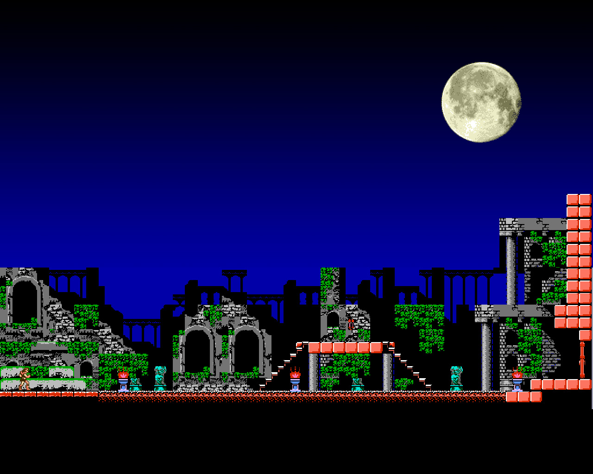

About Simon Belmont
Simon Belmont was a member of the ancestral Belmont Clan of vampire hunters and heir to the renowned Vampire Killer whip. He was born around the year 1669 and became the most famous vampire hunter of all.Simon grew up hearing stories of his great ancestors, who had defeated the Vampire Lord, Count Dracula, along with those who helped them. As he trained in the ways of the whip, he would often wonder how he compared to these legendary warriors.
Opening level of Castlevania 1
Here is a list of real facts, not made up for this!
- He has a big dongus
- He hates snakes
- He sucks a jumping
- He will stright fuck a vampire girl
Enemies
In his time as the notorious vampire hunter and killer, Simon has made quit a bit of enemies. In this field of work it should come as no surprise, but the enemies he has made are creatures of the night. Click on the links below to learn more about them.